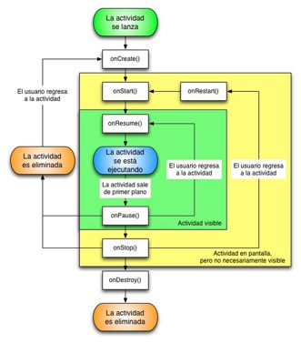

Crear
Cuándo: la actividad se crea por primera vez (o se recrea, por ejemplo al girar).
Qué hacer: setContentView(), findViewById(), listeners, adapters, cargar datos iniciales.
Analogía: encender el teléfono.
Guía práctica
Qué ocurre con una pantalla desde que se abre hasta que se cierra, y qué código conviene escribir en cada momento. Tres prácticas en el proyecto com.example.ciclovida y un caso de estudio.
CicloVida. Package name: com.example.ciclovida. Language: Kotlin.MainActivity.kt y activity_main.xml.Una Activity es una pantalla de la app. Mientras el usuario la abre, cambia a otra app, gira el teléfono o la cierra, Android la hace pasar por distintos estados. En cada cambio de estado llama a un método (callback) que tú puedes sobrescribir para reaccionar en el momento correcto.

| Desde | Qué pasa | Métodos que se ejecutan |
|---|---|---|
onPause() |
El usuario vuelve antes de que la pantalla quede oculta (por ejemplo, cierra un diálogo de permisos). | onResume() |
onStop() |
El usuario regresa a la actividad que estaba oculta. | onRestart() → onStart() → onResume() |
onStop() |
Android necesita memoria y elimina el proceso; luego el usuario vuelve. | onCreate() → onStart() → onResume() |
| Estado | ¿Visible? | ¿Interactúa el usuario? | Se llega con |
|---|---|---|---|
| Creada | No | No | onCreate() |
| Iniciada | Sí | No | onStart() |
| Reanudada (activa) | Sí, en primer plano | Sí | onResume() |
| Pausada | Parcialmente | No | onPause() |
| Detenida | No | No | onStop() |
| Destruida | No | No | onDestroy() |
Cuándo: la actividad se crea por primera vez (o se recrea, por ejemplo al girar).
Qué hacer: setContentView(), findViewById(), listeners, adapters, cargar datos iniciales.
Analogía: encender el teléfono.
Cuándo: la pantalla está por hacerse visible.
Qué hacer: preparar lo que el usuario debe ver actualizado; registrar observadores.
Analogía: abrir la cortina antes de que alguien entre.
Cuándo: la actividad está en primer plano y el usuario puede interactuar.
Qué hacer: iniciar animaciones, cámara, sensores; refrescar datos.
Analogía: empezar a usar tu app favorita.
Cuándo: otra ventana toma el foco (diálogo, llamada, cambio de app).
Qué hacer: detener animaciones y sensores; guardar cambios rápidos. Debe ser breve.
Analogía: recibir una llamada mientras juegas.
Cuándo: la actividad ya no es visible.
Qué hacer: liberar recursos que no se necesitan ocultos; guardar datos más pesados.
Analogía: pulsar Inicio y dejar la app en segundo plano.
Cuándo: el usuario vuelve a una actividad detenida. Le sigue onStart().
Qué hacer: recargar lo que pudo cambiar mientras estaba oculta.
Analogía: volver a la app desde recientes.
Cuándo: la actividad termina (finish(), botón Atrás) o se recrea (rotación).
Qué hacer: liberar todo: reproductores, conexiones, referencias.
Analogía: apagar el teléfono.
super.onXxx() dentro de cada método. Si lo omites, la app se cierra con SuperNotCalledException.onCreate(), onResume(), onPause() y onDestroy().Registrarás cada método con Log.d() y también en pantalla, para observar el orden real en que Android los llama.
SegundaActivitycom.example.ciclovida → New → Activity → Empty Views Activity.SegundaActivity. Layout Name: activity_segunda. Pulsa Finish.<?xml version="1.0" encoding="utf-8"?>
<LinearLayout
xmlns:android="http://schemas.android.com/apk/res/android"
android:id="@+id/main"
android:layout_width="match_parent"
android:layout_height="match_parent"
android:gravity="center"
android:orientation="vertical"
android:padding="24dp">
<TextView
android:layout_width="wrap_content"
android:layout_height="wrap_content"
android:text="Segunda pantalla"
android:textSize="22sp"
android:textStyle="bold" />
<Button
android:id="@+id/btnVolver"
android:layout_width="wrap_content"
android:layout_height="wrap_content"
android:layout_marginTop="16dp"
android:text="Volver" />
</LinearLayout>package com.example.ciclovida
import android.os.Bundle
import android.util.Log
import android.widget.Button
import androidx.appcompat.app.AppCompatActivity
class SegundaActivity : AppCompatActivity() {
override fun onCreate(savedInstanceState: Bundle?) {
super.onCreate(savedInstanceState)
setContentView(R.layout.activity_segunda)
// finish() cierra esta pantalla y regresa a MainActivity
findViewById<Button>(R.id.btnVolver).setOnClickListener {
finish()
}
Log.d("CicloVida", "SegundaActivity: 🎬 onCreate")
}
override fun onStart() {
super.onStart()
Log.d("CicloVida", "SegundaActivity: 👁️ onStart")
}
override fun onResume() {
super.onResume()
Log.d("CicloVida", "SegundaActivity: ▶️ onResume")
}
override fun onPause() {
super.onPause()
Log.d("CicloVida", "SegundaActivity: ⏸️ onPause")
}
override fun onStop() {
super.onStop()
Log.d("CicloVida", "SegundaActivity: ⏹️ onStop")
}
override fun onRestart() {
super.onRestart()
Log.d("CicloVida", "SegundaActivity: 🔄 onRestart")
}
override fun onDestroy() {
super.onDestroy()
Log.d("CicloVida", "SegundaActivity: 💥 onDestroy")
}
}MainActivityReemplaza activity_main.xml:
<?xml version="1.0" encoding="utf-8"?>
<LinearLayout
xmlns:android="http://schemas.android.com/apk/res/android"
android:id="@+id/main"
android:layout_width="match_parent"
android:layout_height="match_parent"
android:orientation="vertical"
android:padding="24dp">
<TextView
android:layout_width="wrap_content"
android:layout_height="wrap_content"
android:text="Ciclo de vida"
android:textSize="22sp"
android:textStyle="bold" />
<Button
android:id="@+id/btnSegunda"
android:layout_width="match_parent"
android:layout_height="wrap_content"
android:layout_marginTop="16dp"
android:text="Abrir segunda pantalla" />
<!-- Historial de métodos ejecutados -->
<TextView
android:id="@+id/tvHistorial"
android:layout_width="match_parent"
android:layout_height="wrap_content"
android:layout_marginTop="16dp"
android:fontFamily="monospace"
android:textSize="14sp" />
</LinearLayout>MainActivity con los 7 métodosReemplaza MainActivity.kt:
package com.example.ciclovida
import android.content.Intent
import android.os.Bundle
import android.util.Log
import android.widget.Button
import android.widget.TextView
import androidx.appcompat.app.AppCompatActivity
class MainActivity : AppCompatActivity() {
companion object {
// Etiqueta para filtrar en Logcat
const val TAG = "CicloVida"
}
private lateinit var tvHistorial: TextView
// Se ejecuta cuando la actividad se crea
override fun onCreate(savedInstanceState: Bundle?) {
super.onCreate(savedInstanceState)
setContentView(R.layout.activity_main)
tvHistorial = findViewById(R.id.tvHistorial)
findViewById<Button>(R.id.btnSegunda).setOnClickListener {
startActivity(Intent(this, SegundaActivity::class.java))
}
registrar("🎬 onCreate")
}
// La actividad va a ser visible
override fun onStart() {
super.onStart()
registrar("👁️ onStart")
}
// El usuario puede interactuar
override fun onResume() {
super.onResume()
registrar("▶️ onResume")
}
// La actividad pierde el foco
override fun onPause() {
super.onPause()
registrar("⏸️ onPause")
}
// La actividad ya no es visible
override fun onStop() {
super.onStop()
registrar("⏹️ onStop")
}
// Regresa de onStop: le sigue onStart
override fun onRestart() {
super.onRestart()
registrar("🔄 onRestart")
}
// La actividad será destruida
override fun onDestroy() {
super.onDestroy()
registrar("💥 onDestroy")
}
// Escribe en Logcat y agrega una línea al historial en pantalla
private fun registrar(metodo: String) {
Log.d(TAG, "MainActivity: $metodo")
tvHistorial.append("$metodo\n")
}
}tag:CicloVida en el filtro. Todas las actividades de esta guía usan la misma etiqueta CicloVida; el inicio de cada mensaje (MainActivity:, SegundaActivity:, MusicaActivity:) indica qué pantalla lo generó.Ejecuta la app y realiza cada acción. Compara Logcat con la secuencia esperada:
| Acción | Secuencia en MainActivity |
|---|---|
| Abrir la app | onCreate → onStart → onResume |
| Pulsar «Abrir segunda pantalla» | onPause → onStop |
| Pulsar «Volver» en la segunda pantalla | onRestart → onStart → onResume |
| Pulsar el botón Inicio | onPause → onStop |
| Volver desde aplicaciones recientes | onRestart → onStart → onResume |
| Girar el teléfono | onPause → onStop → onDestroy → onCreate → onStart → onResume |
| Pulsar Atrás en la pantalla principal | onPause → onStop (Android 12+) o onPause → onStop → onDestroy (versiones anteriores) |
Con el filtro tag:CicloVida se ve cómo se intercalan los métodos de ambas actividades:
Al pulsar «Abrir segunda pantalla»:
Al pulsar «Volver»:
onPause() debe ser rápido: la siguiente pantalla espera a que termine.onDestroy.Un contador que se incrementa con un botón. Primero verás que se pierde al girar; luego lo conservarás con onSaveInstanceState().
Reemplaza activity_main.xml:
<?xml version="1.0" encoding="utf-8"?>
<LinearLayout
xmlns:android="http://schemas.android.com/apk/res/android"
android:id="@+id/main"
android:layout_width="match_parent"
android:layout_height="match_parent"
android:orientation="vertical"
android:padding="24dp">
<TextView
android:layout_width="wrap_content"
android:layout_height="wrap_content"
android:text="Ciclo de vida"
android:textSize="22sp"
android:textStyle="bold" />
<TextView
android:id="@+id/tvContador"
android:layout_width="match_parent"
android:layout_height="wrap_content"
android:layout_marginTop="16dp"
android:gravity="center"
android:text="0"
android:textSize="48sp"
android:textStyle="bold" />
<Button
android:id="@+id/btnSumar"
android:layout_width="match_parent"
android:layout_height="wrap_content"
android:text="Sumar 1" />
<Button
android:id="@+id/btnSegunda"
android:layout_width="match_parent"
android:layout_height="wrap_content"
android:layout_marginTop="8dp"
android:text="Abrir segunda pantalla" />
<Button
android:id="@+id/btnMusica"
android:layout_width="match_parent"
android:layout_height="wrap_content"
android:layout_marginTop="8dp"
android:text="Abrir reproductor" />
<TextView
android:id="@+id/tvHistorial"
android:layout_width="match_parent"
android:layout_height="wrap_content"
android:layout_marginTop="16dp"
android:fontFamily="monospace"
android:textSize="14sp" />
</LinearLayout>btnMusica se programa en la Práctica 3. Por ahora no hace nada.Reemplaza MainActivity.kt:
package com.example.ciclovida
import android.content.Intent
import android.os.Bundle
import android.util.Log
import android.widget.Button
import android.widget.TextView
import androidx.appcompat.app.AppCompatActivity
class MainActivity : AppCompatActivity() {
companion object {
const val TAG = "CicloVida"
const val KEY_CONTADOR = "contador"
}
private lateinit var tvHistorial: TextView
private lateinit var tvContador: TextView
private var contador = 0
override fun onCreate(savedInstanceState: Bundle?) {
super.onCreate(savedInstanceState)
setContentView(R.layout.activity_main)
tvHistorial = findViewById(R.id.tvHistorial)
tvContador = findViewById(R.id.tvContador)
// Si la actividad se está RECREANDO (rotación), el Bundle trae los datos guardados.
// Si se crea por primera vez, savedInstanceState es null y el contador empieza en 0.
contador = savedInstanceState?.getInt(KEY_CONTADOR) ?: 0
tvContador.text = contador.toString()
findViewById<Button>(R.id.btnSumar).setOnClickListener {
contador++
tvContador.text = contador.toString()
}
findViewById<Button>(R.id.btnSegunda).setOnClickListener {
startActivity(Intent(this, SegundaActivity::class.java))
}
registrar("🎬 onCreate (contador = $contador)")
}
// Android lo llama antes de destruir la actividad por un cambio de configuración
override fun onSaveInstanceState(outState: Bundle) {
super.onSaveInstanceState(outState)
outState.putInt(KEY_CONTADOR, contador)
registrar("💾 onSaveInstanceState (contador = $contador)")
}
override fun onStart() {
super.onStart()
registrar("👁️ onStart")
}
override fun onResume() {
super.onResume()
registrar("▶️ onResume")
}
override fun onPause() {
super.onPause()
registrar("⏸️ onPause")
}
override fun onStop() {
super.onStop()
registrar("⏹️ onStop")
}
override fun onRestart() {
super.onRestart()
registrar("🔄 onRestart")
}
override fun onDestroy() {
super.onDestroy()
registrar("💥 onDestroy")
}
private fun registrar(metodo: String) {
Log.d(TAG, "MainActivity: $metodo")
tvHistorial.append("$metodo\n")
}
}| Prueba | Sin onSaveInstanceState |
Con onSaveInstanceState |
|---|---|---|
| Sumar hasta 5 y girar | El contador vuelve a 0 | El contador sigue en 5 |
| Historial en pantalla | Se borra | Se borra (no se guardó en el Bundle) |
outState.putInt(...), gira el teléfono y observa que el contador se pierde. Luego quita el comentario.SharedPreferences o SQLite.tvHistorial en el Bundle para que el historial sobreviva a la rotación.Escenario: MusicApp reproduce una canción. La música debe seguir sonando si el usuario abre WhatsApp un momento, y el reproductor debe liberarse al cerrar la pantalla.
res → New → Android Resource Directory → Resource type: raw → OK.res/raw con el nombre cancion.mp3: minúsculas, sin espacios, sin empezar con número.R.raw.cancion.MusicaActivityClic derecho en com.example.ciclovida → New → Activity → Empty Views Activity → MusicaActivity / activity_musica.
<?xml version="1.0" encoding="utf-8"?>
<androidx.constraintlayout.widget.ConstraintLayout
xmlns:android="http://schemas.android.com/apk/res/android"
xmlns:app="http://schemas.android.com/apk/res-auto"
xmlns:tools="http://schemas.android.com/tools"
android:id="@+id/main"
android:layout_width="match_parent"
android:layout_height="match_parent"
android:padding="20dp"
tools:context=".MusicaActivity">
<TextView
android:id="@+id/tvCancion"
android:layout_width="wrap_content"
android:layout_height="wrap_content"
android:text="Presiona Play para escuchar"
android:textSize="20sp"
android:textStyle="bold"
app:layout_constraintBottom_toTopOf="@+id/btnPlay"
app:layout_constraintEnd_toEndOf="parent"
app:layout_constraintStart_toStartOf="parent"
app:layout_constraintTop_toTopOf="parent"
app:layout_constraintVertical_chainStyle="packed" />
<Button
android:id="@+id/btnPlay"
android:layout_width="wrap_content"
android:layout_height="wrap_content"
android:layout_marginTop="32dp"
android:text="Reproducir"
app:layout_constraintBottom_toTopOf="@+id/btnPause"
app:layout_constraintEnd_toEndOf="parent"
app:layout_constraintStart_toStartOf="parent"
app:layout_constraintTop_toBottomOf="@+id/tvCancion" />
<Button
android:id="@+id/btnPause"
android:layout_width="wrap_content"
android:layout_height="wrap_content"
android:layout_marginTop="16dp"
android:text="Pausar"
app:layout_constraintBottom_toBottomOf="parent"
app:layout_constraintEnd_toEndOf="parent"
app:layout_constraintStart_toStartOf="parent"
app:layout_constraintTop_toBottomOf="@+id/btnPlay" />
</androidx.constraintlayout.widget.ConstraintLayout>package com.example.ciclovida
import android.media.MediaPlayer
import android.os.Bundle
import android.util.Log
import android.widget.Button
import android.widget.TextView
import androidx.appcompat.app.AppCompatActivity
class MusicaActivity : AppCompatActivity() {
companion object {
const val TAG = "CicloVida"
}
private var mediaPlayer: MediaPlayer? = null
private lateinit var tvCancion: TextView
// 🎬 Preparar: reproductor y botones
override fun onCreate(savedInstanceState: Bundle?) {
super.onCreate(savedInstanceState)
setContentView(R.layout.activity_musica)
tvCancion = findViewById(R.id.tvCancion)
// create() devuelve null si el audio no se puede abrir
mediaPlayer = MediaPlayer.create(this, R.raw.cancion)
if (mediaPlayer == null) {
Log.e(TAG, "MusicaActivity: ❌ No se pudo crear el MediaPlayer. Revisa res/raw/cancion.mp3")
}
findViewById<Button>(R.id.btnPlay).setOnClickListener {
mediaPlayer?.start()
tvCancion.text = "🎵 Reproduciendo..."
}
findViewById<Button>(R.id.btnPause).setOnClickListener {
mediaPlayer?.pause()
tvCancion.text = "⏸️ Pausado"
}
Log.d(TAG, "MusicaActivity: 🎬 onCreate: reproductor listo")
}
// 👁️ Mostrar: refleja el estado real del reproductor
override fun onStart() {
super.onStart()
if (mediaPlayer?.isPlaying == true) {
tvCancion.text = "🎵 Reproduciendo..."
}
Log.d(TAG, "MusicaActivity: 👁️ onStart: pantalla visible")
}
// ▶️ Activar: el usuario puede usar los botones
override fun onResume() {
super.onResume()
Log.d(TAG, "MusicaActivity: ▶️ onResume: interactuando")
}
// ⏸️ Pausar: NO se detiene la música; solo se registraría la posición o animaciones
override fun onPause() {
super.onPause()
Log.d(TAG, "MusicaActivity: ⏸️ onPause: posición = ${mediaPlayer?.currentPosition ?: 0} ms")
}
// ⏹️ Ocultar: la música sigue sonando en segundo plano
override fun onStop() {
super.onStop()
Log.d(TAG, "MusicaActivity: ⏹️ onStop: oculta, la música continúa")
}
// 🔄 Regresar
override fun onRestart() {
super.onRestart()
Log.d(TAG, "MusicaActivity: 🔄 onRestart: el usuario regresó")
}
// 💥 Destruir: detener y liberar el reproductor
override fun onDestroy() {
super.onDestroy()
mediaPlayer?.release()
mediaPlayer = null
Log.d(TAG, "MusicaActivity: 💥 onDestroy: reproductor liberado")
}
}MainActivityEn MainActivity.kt (Práctica 2), agrega este listener dentro de onCreate(), junto al de btnSegunda:
findViewById<Button>(R.id.btnMusica).setOnClickListener {
startActivity(Intent(this, MusicaActivity::class.java))
}tag:CicloVida): pulsa Play, luego Inicio y abre otra app. Verás MusicaActivity: ⏸️ onPause y ⏹️ onStop mientras la música sigue sonando. Al pulsar Atrás aparece 💥 onDestroy y la música se detiene.| Método | Qué hace el usuario | Qué hace la app | ¿Suena la música? |
|---|---|---|---|
onCreate() |
Abre el reproductor | Crea el MediaPlayer y configura botones |
No |
onStart() / onResume() |
Ve la pantalla y pulsa Play | Muestra el estado; start() al pulsar |
Sí, tras pulsar Play |
onPause() / onStop() |
Abre WhatsApp | Registra la posición; no detiene | Sí, continúa |
onRestart() |
Vuelve al reproductor | Restaura la interfaz | Sí |
onDestroy() |
Pulsa Atrás | release() del reproductor |
No |
onDestroy() libera el reproductor y la canción se detiene. Las apps reales reproducen música desde un Service, que no depende del ciclo de vida de la pantalla.onStop() y se reanude en onStart() solo si estaba sonando. Pista: guarda un Boolean estabaSonando antes de pausar.Escenario: una app de mensajería tipo WhatsApp que mantiene conexión con el servidor, muestra mensajes en tiempo real, notifica mensajes nuevos y los marca como «leídos» solo cuando el usuario los ve.
| # | El usuario… | Métodos |
|---|---|---|
| 1 | Abre ChatApp para revisar mensajes | onCreate → onStart → onResume |
| 2 | Abre el chat con Carlos: los mensajes se marcan ✓✓ | onResume |
| 3 | Recibe una llamada y deja la app | onPause → onStop |
| 4 | Mientras habla llega un mensaje: aparece una notificación 🔔 | (la actividad sigue detenida) |
| 5 | Vuelve a ChatApp, ve el mensaje y responde | onRestart → onStart → onResume |
| 6 | Cierra la app | onPause → onStop → onDestroy |
ChatActivityEste código muestra dónde va cada responsabilidad. Usa clases de ejemplo (ChatSocket, MessageAdapter, DatabaseHelper) que no forman parte de Android: es un esquema para analizar, no un proyecto para ejecutar.
class ChatActivity : AppCompatActivity() {
private var socket: ChatSocket? = null
private lateinit var editMessage: EditText
private lateinit var dbHelper: DatabaseHelper
private var contactId = ""
// 🎬 Crear y preparar
override fun onCreate(savedInstanceState: Bundle?) {
super.onCreate(savedInstanceState)
setContentView(R.layout.activity_chat)
contactId = intent.getStringExtra("CONTACT_ID") ?: ""
editMessage = findViewById(R.id.editMessage)
dbHelper = DatabaseHelper(this)
cargarMensajesLocales() // SQLite: la app funciona sin internet
socket = ChatSocket(contactId) // Conexión con el servidor
socket?.connect()
Log.d("CicloVida", "ChatActivity: 🎬 onCreate: chat con $contactId")
}
// 👁️ Visible: escuchar mensajes y ponerse "En línea"
override fun onStart() {
super.onStart()
socket?.setListener { mensaje -> mostrarMensaje(mensaje) }
sincronizarPendientes()
actualizarEstado("online")
Log.d("CicloVida", "ChatActivity: 👁️ onStart: en línea, escuchando mensajes")
}
// ▶️ El usuario está viendo el chat
override fun onResume() {
super.onResume()
marcarComoLeidos(contactId) // ✓✓ solo cuando realmente los ve
cancelarNotificaciones(contactId)
editMessage.setText(leerBorrador(contactId))
Log.d("CicloVida", "ChatActivity: ▶️ onResume: mensajes leídos ✓✓")
}
// ⏸️ Llamada o cambio de app
override fun onPause() {
super.onPause()
guardarBorrador(contactId, editMessage.text.toString())
activarNotificaciones(true)
Log.d("CicloVida", "ChatActivity: ⏸️ onPause: borrador guardado")
}
// ⏹️ En segundo plano: la conexión sigue para notificar
override fun onStop() {
super.onStop()
actualizarEstado("away")
Log.d("CicloVida", "ChatActivity: ⏹️ onStop: usuario ausente")
}
// 🔄 Regresa: traer lo que llegó mientras estaba oculta
override fun onRestart() {
super.onRestart()
cargarMensajesNuevos()
Log.d("CicloVida", "ChatActivity: 🔄 onRestart: el usuario regresó")
}
// 💥 Cerrar todo para evitar fugas de memoria
override fun onDestroy() {
super.onDestroy()
socket?.disconnect()
socket = null
actualizarEstado("offline")
dbHelper.close()
Log.d("CicloVida", "ChatActivity: 💥 onDestroy: chat cerrado")
}
// ... métodos auxiliares: cargarMensajesLocales(), guardarBorrador(), etc.
}| Estado del chat | Método | Situación |
|---|---|---|
| Activo | onResume() |
Mensajes leídos, notificaciones canceladas, el usuario escribe. |
| En segundo plano | onPause() / onStop() |
Borrador guardado, notificaciones activas, conexión abierta. |
| Cerrado | onDestroy() |
Conexión y base de datos cerradas, estado «offline». |
TextWatcher, envía un evento «typing» al servidor, muestra el indicador al recibir el evento del otro usuario, ocúltalo en onPause() y después de 3 segundos de inactividad.super.onXxx().onPause() breve: la siguiente pantalla espera a que termine.onResume() lo que se detiene en onPause() (cámara, sensores, animaciones).onPause().onSaveInstanceState().MediaPlayer, conexiones) en onDestroy().super: la app se cierra.onDestroy() siempre se ejecuta: si Android elimina el proceso, puede no llamarse.onPause().onStop() u onDestroy().| Método | En una palabra | Uso típico |
|---|---|---|
onCreate() |
Crear 🎬 | Layout, vistas, listeners, datos iniciales, restaurar el Bundle. |
onStart() |
Mostrar 👁️ | Registrar observadores, actualizar la interfaz. |
onResume() |
Activar ▶️ | Cámara, sensores, animaciones, marcar como leído. |
onPause() |
Pausar ⏸️ | Detener lo iniciado en onResume(), guardar borradores. |
onStop() |
Ocultar ⏹️ | Liberar recursos visuales, guardar datos pesados. |
onRestart() |
Regresar 🔄 | Recargar lo que cambió mientras estaba oculta. |
onDestroy() |
Eliminar 💥 | Liberar reproductores, conexiones y referencias. |
onSaveInstanceState() |
Guardar 💾 | Conservar datos pequeños ante una rotación. |
onCreate → onStart → onResume → (la app se usa) → onPause → onStop → (onRestart → onStart → onResume si regresa) → onDestroy.